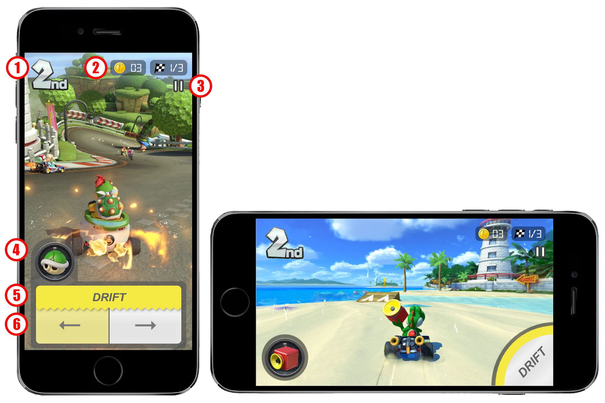

Gameplay & Controls

Race Position
Race Position is used for display purposes only, so it should be positioned at the top of the screen to make room at the bottom for touch features.
It's positioned in the corner away from other objects to provide absolute clarity to the user during a race.
Coin # and Lap #
Like the Race Position, the Coin # and Lap # are for display purposes only.
Since they are not interacted with by touch, it should be positioned at the top of the screen.
Pause Button
The Pause Button is the only touch feature positioned at the top of the screen.
Since it's not a commonly used feature, it should be positioned at the top, reserving the bottom of the screen for more commonly used touch features.
Item Slot
The Item Slot is one of the more commonly used touch features so it is positioned closer to the bottom of the screen.
Users can tap, tap-and-hold, swipe-up, and swipe-down to interact with this object.
By positioning this object to the left side of the screen, users are able to take full control over steering using their primarily dominate right thumb when an item is being interacted with by the left thumb.
Drifting
Heavy consideration was placed on the UI design of the drifting/steering features.
In 1 particular scenario, users need to be able to perform a drift, control the steering, and use their item at the same time.
This feature is designed such that the drifting and steering controls can be operated with by 1 thumb, allowing the other thumb to control the Item Slot.
Users are able to tap the drift button and move their thumb over the steering controls to change the direction of the drift.
With this UI, drifting and steering and be accomplished comfortably using a single thumb and a single touch.
Having this object span the width of the screen provides comfortable access to both thumbs for performing either a left or right drift.
Steering
The Steering UI was designed with the primary objective of providing users with a comfortable and pain-free experience on the thumbs.
Buttons for turning left and right seems to provide the most comfort over alternatives like a joystick or swipe-based steering.
With a single tap, users can steer in opposite directions by sliding the thumb from one button to the other.
When the phone is held horizontally, users can control the steering using the phone's tilt-controls.
This is already a familiar play style for many of Nintendo's recent consoles and would translate very well to mobile devices.
Acceleration
The racer should auto-accelerate for a few reasons.
With limited screen space and only 2 thumbs for controls, there's a limited number of features the user can activate at one time.
I decided that steering, drifting, and item usage would provide more entertainment than reserving 1 thumb to consistently hold a gas pedal button.
Nintendo has also featured an "auto-accelerate" feature in games like Super Mario Run for mobile devices and Mario Kart 8 Deluxe for the Switch.
Therefore, it would not be a surprise to see this in future games.